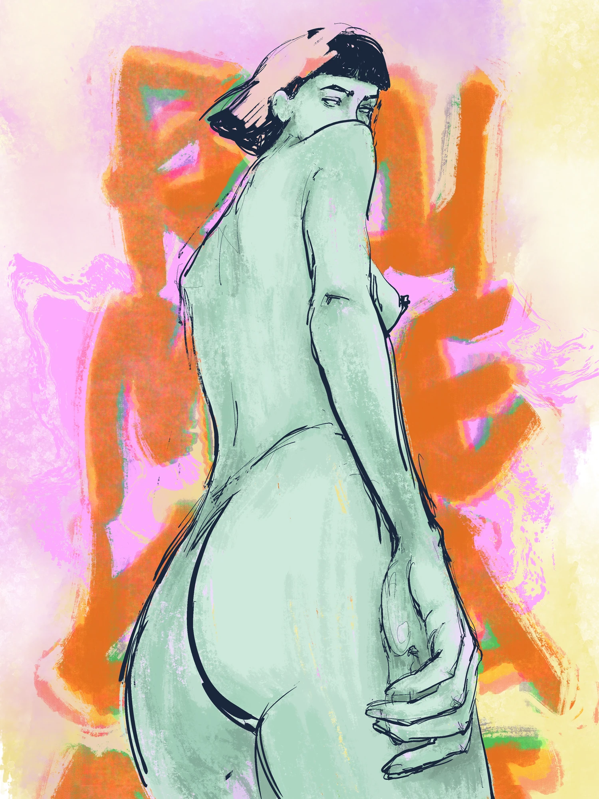

Collection 01 / 40 works
DIGITAL
Digital works
Expressive figures, observed streets and layered lines. Four series drawn in Procreate.
Explore 4 series ↓
Colour & body
Green figures, loose gestures and fields of colour. A series exploring pose, proportion and the space around the body.
View the seriesStreet notes
Stairways, courtyards and ordinary corners, observed in dark lines with occasional flashes of red.
View the seriesGraphic stories
Figures overlap, gestures repeat, and red becomes a rhythm. Small scenes with a graphic sensibility.
View the seriesAnimal lines
Five animal studies built from overlapping red and black lines.
View the series